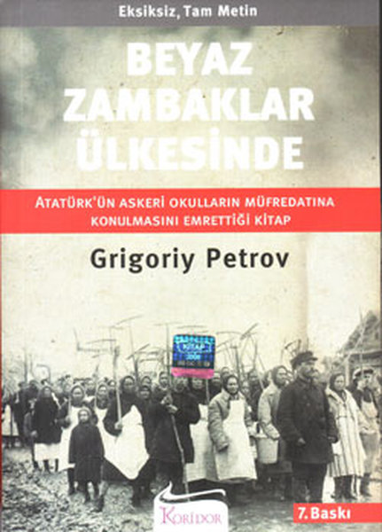
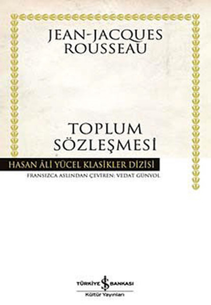
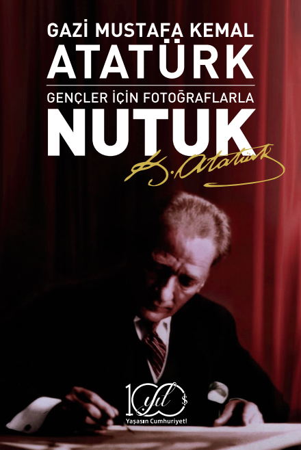
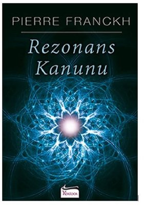

.jpg)
Sineklerin TanrısıSineklerin Tanrısı, Nobel Edebiyat Ödüllü İngiliz romancı ve şair William Golding'in 1954 yılında yazdığı alegorik romanıdır. Sepete Ekle |
.jpg)
Omerta:Suskunluk YasasıOmertà, Mario Puzo'nun ölümünden sonra 2000 yılında yayınlanan bir romanıdır.Omertà,Don Aprile'in evlat edindiği "yeğeni" Astorre Viola'nın hikayesini takip ediyor Sepete Ekle |
.jpg)
Aptallar Erken ÖlürKumar, yayıncılık ve film endüstrisi dünyalarında oynanan John Merlyn ve kardeşi Artie Merlyn, hukuk ve organize suçun bir ve aynı olduğu 1950'lerin Amerika'sında kendi onur kurallarına uyarlar. Sepete Ekle |
.jpg)
İktidarGücün 48 Yasası, Amerikalı yazar Robert Greene'in yazdığı bir kişisel gelişim kitabıdır. Kitap, Amerika Birleşik Devletleri'nde 1,2 milyondan fazla kopya satan New York Times'ın en çok satanları arasında yer alıyor. Sepete Ekle |

Canım ÖğretmenimCanımız öğretmenimiz Serkan Akan'a anlayışı.cömertliği ve güler yüzü için çok teşekkür ederiz :)) ///Muzaffer İzgü, Türk yazar ve öğretmen. Türkiye'nin en çok okunan gülmece, genç ve çocuk kitapları yazarlarındandır. 107 kitap, iki yüze yakın radyo oyunu yazmıştır Sepete Ekle |

Beyaz Zambaklar Ülkesinde1800'lerin son döneminde Finlandiya halkının içinde bulunduğu durumu, cehaletten kurtulmak için ülkedeki bir avuç Fin aydının verdiği olağanüstü mücadeleyi anlatır. Sepete Ekle |

Toplum SözleşmesiKitapta, siyasi bir sistemin kurulabilmesi için en iyi yöntemin toplumsal sözleşme olduğu açıklanmaktadır. Sepete Ekle |

NutukNutuk, Mustafa Kemal Atatürk'ün 3 aylık bir süre içinde tamamladığı ve 15-20 Ekim 1927 tarihlerinde Cumhuriyet Halk Fırkası'nın İkinci Büyük Kurultayında kürsüden okuduğu eserdir. Sepete Ekle |

Rezonans KanunuEvrendeki sonsuz zenginliğin bir parçası olmak ve onunla uyum içinde kalmak istiyorsunuz. Artık hayatın gerçek, bilgece sırlarından birini keşfetme zamanı geldi: Hissettiğiniz ya da düşündüğünüz her şey, bir rezonans alanı oluşturur ve hem sizi hem de çevrenizdekileri kalıcı olarak değiştirir. Sepete Ekle |

Gece Yarısı KütüphanesiKitabın baş kahramanı hayatını oluşturacak kendi hikâyeleriyle dolu milyonlarca kitap barındırmaktadır. Bu kütüphanede en çok memnun olacağı hayatı bulmaya çalışır Sepete Ekle |
055532531 |